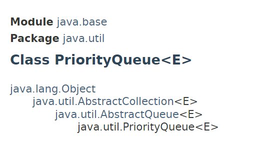
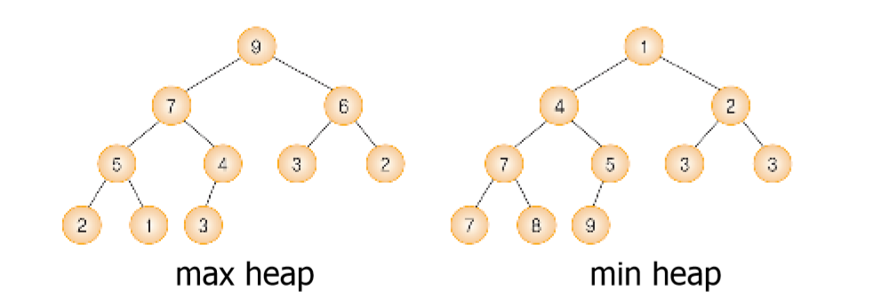

우선순위큐
https://docs.oracle.com/en/java/javase/11/docs/api/java.base/java/util/PriorityQueue.html
1. 클래스

2. 특징
- Queue의 성질을 가지고 있지만, 선입선출(FIFO)이 아닌 가장 가중치가 낮은 순서로 원소를 리턴한다.
- Min Heap으로 데이터를 정렬한다.
- 때에 따라서는 CompareTo()를 수정하여 Max Heap, 가중치가 높은 순서로 변경하여 사용한다.
- key(데이터의 priority), value로 이루어진 pair를 저장하는 비선형 자료구조이다. 
-
- Min Heap(최소힙)
- 부모 키<자식 키. 루트에 최소값이 들어간다.
-
- Max Heap(최대힙)
- 부모 키>자식 키. 루트에 최대값이 들어간다.
- Min Heap, Max Heap 모두 삭제 연산 시 루트노드를 한다. 이후 힙의 속성을 유지하기 위해 우측 맨 아래 리프노드를 루트 자리에 넣은 후 다시 자식 노드들과 비교하며 자리를 찾는다.
3. 선언
import java.util.PriorityQueue;
/*...*/
//PriorityQueue<E> pq=new PriorityQueue<E>();
PriorityQueue<Integer> pq=new PriorityQueue<Integer>();
/*...*/
4. 주요 메소드
public boolean offer(E item);- 역할: 우선순위큐에 값을 넣는다.
- 파라미터: item(삽입할 값)
- 리턴: true(성공), false(실패)
- 특징: add(item)메소드와 같다.
public Element poll();- 역할: 루트노드(가중치가 작은/큰)를 삭제한다.
- 리턴: 루트노드
public Element peek();- 역할: 루트노드를 리턴하되 삭제하지는 않는다.
- 리턴: 루트노드
5. 예외처리
- NullPointerException: 넣을 아이템이 null인 경우 발생한다.
- ClassCastException: 캐스팅이 불가할 때 발생한다.
6. 우선순위큐 응용분야
- 시뮬레이션 시스템(여기서의 우선순위는 대개 사건의 시각이다).
- 네트워크 트래픽 제어.
- 운영체제에서 작업 스케쥴링.
7. 참고
- 우선순위큐, 최소 힙, 최대 힙_JAVA http://blog.naver.com/PostView.nhn?blogId=zxy826&logNo=220804468536&parentCategoryNo=32&categoryNo=&viewDate=&isShowPopularPosts=true&from=search
- Java Queue, Priority Queue 예제 https://gamjatwigim.tistory.com/72
- 우선순위 큐(priority queue) https://medium.com/quantum-ant/%EC%9A%B0%EC%84%A0%EC%88%9C%EC%9C%84-%ED%81%90-priority-queue-80a161664e3b
- 우선순위 큐(Priority Queue) https://eremo2002.tistory.com/21